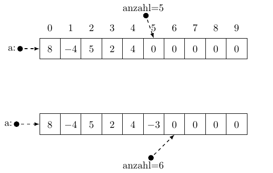
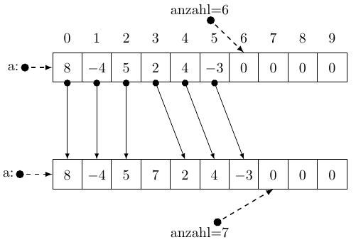

Lektion 2.3 — Teil 2: Datenstrukturen & OOP
Arrays: Einfügen & Entfernen
Lernziele
- ein Array mit fester Maximalgröße und einer Variable
anzahlals dynamische Liste verwendenAbschnitt 1 - Werte am Ende hinzufügen und dabei auf freien Platz prüfenAbschnitt 2
- Werte an einer Position einfügen (nach hinten verschieben) und entfernen (nach vorne ziehen)Abschnitt 3
- begründen, warum eine Klasse ihr internes Array nicht nach außen herausgibtAbschnitt 4
- mit
toString()eine Textdarstellung eines Objekts erzeugen und vonprint()abgrenzenAbschnitt 5
1 — Feste Größe, variable Anzahl
Die Größe eines Arrays wird beim Erzeugen (new int[10]) festgelegt und kann nachträglich
nicht verändert werden. Häufig will man aber zur Laufzeit Werte hinzufügen oder löschen – etwa in
einem Programm, das laufend Messwerte erfasst.
Die Lösung: Zuerst ein Array mit der Maximalanzahl zulässiger Werte anlegen und zusätzlich
speichern, wie viele Plätze aktuell mit fachlich gültigen Werten befüllt sind. Diese
int-Variable enthält den Index des ersten unbenutzten Platzes – anders gesagt, die
Anzahl der gültigen Werte. Wir nennen sie anzahl (möglich wäre auch
next).
2 — Hinzufügen
Die Abbildung zeigt ein Array mit 5 Werten: gültige Indizes 0 bis 4. Da die Anzahl 5 ist, ist 5 zugleich der
Index, an dem das nächste Element eingefügt werden kann. Der neue Wert -3 kommt an Index 5, und
anzahl wird erhöht.

Natürlich muss geprüft werden, ob noch Platz ist – genau dann, wenn anzahl < a.length:
public void hinzufuegen(int wert) {
if (wert > -100 && wert < 100) { // Parameterpruefung
if (anzahl < a.length) {
a[anzahl] = wert;
anzahl++;
// Anmerkung: kuerzer, in einer Zeile: a[anzahl++] = wert;
} else {
System.out.println("Array voll");
}
} else {
System.out.println("Ungueltiger Wert: " + wert);
}
}3 — Einfügen an einer Position
Soll ein Wert an einer bestimmten Stelle index eingefügt werden, müssen alle Werte danach um eine
Stelle nach hinten verschoben werden. Die Abbildung zeigt das Einfügen des Wertes 7 an Index 3 (die vierte
Stelle).

Die Pfeile deuten das Verschieben an – diese Logik muss ausprogrammiert werden. Verschoben wird von hinten nach vorne, da man sonst Werte überschreiben würde.
public void einfuegen(int wert, int index) {
if (wert > -100 && wert < 100) { // Parameterpruefung
if (anzahl < a.length) {
if (index >= 0 && index <= anzahl) {
for (int i = anzahl; i > index; i--) {
a[i] = a[i-1];
}
anzahl++;
a[index] = wert;
} else {
System.out.println("Ungueltiger Index: " + index);
}
} else {
System.out.println("Array voll");
}
} else {
System.out.println("Ungueltiger Wert: " + wert);
}
}
Weil Hinzufügen, Einfügen und Entfernen so häufig vorkommen, bietet Java fertige Komponenten mit dieser
Logik (ArrayList, Lektion 2.7). Zunächst soll der Umgang mit Arrays aber das Verständnis
für die algorithmische Vorgehensweise und die Anzahl der elementaren Operationen festigen.
4 — Codebeispiel: Klasse Array
Array.java Code anzeigen (97 Zeilen)
public class Array
{
private int[] werte;
private int anzahl;
public Array(int groesse) {
if (groesse > 0) {
werte = new int[groesse];
anzahl = 0;
} else {
System.out.println("Fehler, ungueltige Groesse");
}
}
public int getAnzahl() {
return anzahl;
}
// ACHTUNG! Auf keinen Fall eine derartige Methode implementieren!
// public int[] getWerte() { }
// ... Wuerde interne Logik der Klasse beeintraechtigen,
// z.B. Wertebereiche verletzen, etc.
public int wert(int index) {
if (index >= 0 && index < anzahl) {
return werte[index];
} else {
System.out.println("Fehler, ungueltiger Index: " + index);
return -1; // unschoen... spaeter machen wir es besser ;-) (-> Exceptions)
}
}
public void hinzufuegen(int wert) {
if (wert >= -100 && wert <= 100) {
if (anzahl < werte.length) {
werte[anzahl++] = wert;
} else {
System.out.println("Fehler: Array voll!");
}
} else {
System.out.println("Fehler: ungueltiger Wert: " + wert);
}
}
public void einfuegen(int index, int wert) {
if (wert >= -100 && wert <= 100) {
if (index >= 0 && index <= anzahl) {
if (anzahl < werte.length) {
for (int i = anzahl; i > index; i--) {
werte[i] = werte[i-1];
}
werte[index] = wert;
anzahl++;
} else {
System.out.println("Fehler: Array voll!");
}
} else {
System.out.println("Fehler, ungueltiger Index: " + index);
}
} else {
System.out.println("Fehler: ungueltiger Wert: " + wert);
}
}
public void entfernen(int index) {
// Parameterpruefungen
if (index >= 0 && index < anzahl) {
for (int i = index; i < anzahl-1; i++) {
werte[i] = werte[i+1];
}
anzahl--;
} else {
System.out.println("Fehler, ungueltiger Index: " + index);
}
}
public void print() {
// System.out.println(this.toString());
// oder kuerzer:
System.out.println(this);
}
public String toString() {
String str = "Werte: ";
if (anzahl > 0) {
for (int i = 0; i < anzahl; i++) {
if (i > 0) {
str += ", ";
}
str += werte[i];
}
} else {
str += " keine Werte vorhanden.";
}
return str;
}
}hinzufuegenfügt nach der Parameterprüfung am Ende der gültigen Werte ein.werte[anzahl++] = wert;weist an der Stelleanzahlzu, anschließend (!) wirdanzahlerhöht.einfuegendurchläuft das Array von hinten nach vorne und „verschiebt“ (eigentlich: kopiert) die Inhalte um je einen Platz nach hinten – bis zur Stelleindex + 1. Dann wirdwertanindexgesetzt undanzahlerhöht.entfernenzieht alle Werte nachindexum einen Platz nach vorne und verringertanzahl. Der letzte Wert bleibt zwar physisch im Array, liegt aber außerhalb der gültigen Werte.- Eine Methode
getWerte(), die das Array herausgibt, wäre fatal: Von außen könnten ungültige Werte hineingeschrieben werden, undanzahlwürde nicht mehr stimmen.
5 — Die Methode toString
In diesem Beispiel wurde erstmals die spezielle Methode String toString() verwendet. Sie
liefert eine Darstellung des Objekts als reinen Text: Nach der Fallunterscheidung, ob überhaupt gültige
Werte vorhanden sind, werden die Werte mit einer Schleife in einen String geschrieben, der am Ende
zurückgegeben wird.
print()
schreibt eine Textdarstellung auf die Konsole. Was nur mit System.out.println ausgegeben wird, kann im Programm nicht weiterverarbeitet werden.
toString()
erstellt einen String und gibt ihn zurück. Er kann in anderen Objekten weiterverwendet werden – in einer Oberfläche, in einer Datei, in einem Test.
Die print-Methode kann toString verwenden. Es ist nicht einmal nötig,
toString explizit aufzurufen: Übergibt man System.out.println eine
Objektreferenz (innerhalb der Klasse this), erkennt Java, dass ein String gebraucht wird, und
ruft selbst toString() auf. Dasselbe passiert bei der String-Verkettung: "Array: " + a.
Projektschritt
Zeiterfassung als Liste von Buchungen
Warum umbauen? Ein Array mit einem Platz pro Kalendertag hat zwei Nachteile: Es lassen sich nur ganze Tage erfassen (zwei Einsätze an einem Tag gehen nicht), und viele Plätze bleiben leer (Wochenenden, Urlaub). Eine Liste der tatsächlichen Arbeitseinsätze passt besser – und genau dafür brauchen wir Hinzufügen, Einfügen und Entfernen aus dieser Lektion. Statt fester Kalendertage speichert die Zeiterfassung jetzt Buchungen (Arbeitseinsätze in Stunden) in Eingabereihenfolge – genau nach dem Muster der Klasse Array: Maximalgröße plus anzahl, Hinzufügen, Einfügen, Entfernen und toString(). Auch die Berechnungen laufen nur noch bis anzahl. Die Tests prüfen jetzt bequem den Text von toString().
src/main/java/Zeiterfassung.java Code anzeigen (136 Zeilen)
/*
Personalverwaltung – Arbeitseinsätze (Buchungen) in Stunden.
Stand: Lektion 2.3: statt fester Tage eine "Liste" von Buchungen.
Das Array hat eine Maximalgröße, "anzahl" zählt die gültigen Einträge.
*/
public class Zeiterfassung {
private int[] buchungen;
private int anzahl; // Anzahl gültiger Werte = Index des nächsten freien Platzes
public Zeiterfassung() {
buchungen = new int[50];
anzahl = 0;
}
public Zeiterfassung(int maxBuchungen) {
if (maxBuchungen > 0) {
buchungen = new int[maxBuchungen];
} else {
System.out.println("Fehler: ungueltige Groesse: " + maxBuchungen);
buchungen = new int[50];
}
anzahl = 0;
}
public int getAnzahl() {
return anzahl;
}
// ACHTUNG: keine Methode getBuchungen(), die das Array herausgibt!
// Sonst könnte man von außen ungültige Werte hineinschreiben.
public int wert(int index) {
if (index >= 0 && index < anzahl) {
return buchungen[index];
} else {
System.out.println("Fehler: ungueltiger Index: " + index);
return -1;
}
}
public void hinzufuegen(int stunden) {
if (stunden >= 1 && stunden <= 12) {
if (anzahl < buchungen.length) {
buchungen[anzahl++] = stunden;
} else {
System.out.println("Fehler: Zeiterfassung voll!");
}
} else {
System.out.println("Fehler: ungueltige Stundenanzahl: " + stunden);
}
}
public void einfuegen(int index, int stunden) {
if (stunden >= 1 && stunden <= 12) {
if (index >= 0 && index <= anzahl) {
if (anzahl < buchungen.length) {
// von hinten nach vorne um einen Platz nach hinten schieben
for (int i = anzahl; i > index; i--) {
buchungen[i] = buchungen[i - 1];
}
buchungen[index] = stunden;
anzahl++;
} else {
System.out.println("Fehler: Zeiterfassung voll!");
}
} else {
System.out.println("Fehler: ungueltiger Index: " + index);
}
} else {
System.out.println("Fehler: ungueltige Stundenanzahl: " + stunden);
}
}
public void entfernen(int index) {
if (index >= 0 && index < anzahl) {
// nachfolgende Werte um einen Platz nach vorne ziehen
for (int i = index; i < anzahl - 1; i++) {
buchungen[i] = buchungen[i + 1];
}
anzahl--;
} else {
System.out.println("Fehler: ungueltiger Index: " + index);
}
}
public int summe() {
int summe = 0;
for (int i = 0; i < anzahl; i++) {
summe += buchungen[i];
}
return summe;
}
public int maximum() {
if (anzahl == 0) {
return 0;
}
int max = buchungen[0];
for (int i = 1; i < anzahl; i++) {
if (buchungen[i] > max) {
max = buchungen[i];
}
}
return max;
}
public double durchschnitt() {
if (anzahl > 0) {
return (double) summe() / anzahl;
} else {
return 0;
}
}
@Override
public String toString() {
String str = "Buchungen: ";
if (anzahl > 0) {
for (int i = 0; i < anzahl; i++) {
if (i > 0) {
str += ", ";
}
str += buchungen[i] + " h";
}
str += " (Summe: " + summe() + " h)";
} else {
str += "keine Buchungen vorhanden.";
}
return str;
}
public void print() {
System.out.println(this); // ruft toString() auf
}
}📁 Stand nach dieser Lektion: beispiele/2.3/
Häufige Fehler
Nach dem Einfügen steht derselbe Wert mehrfach hintereinander im Array.
Von hinten nach vorne kopieren: for (int i = anzahl; i > index; i--) werte[i] = werte[i-1];. Von vorne würde jeder Wert den nächsten überschreiben.
Nach entfernen erscheint der entfernte Wert noch in der Ausgabe, oder hinzufuegen überschreibt immer Platz 0.
Jede Operation muss anzahl anpassen (++ bzw. --), und alle Schleifen laufen nur bis anzahl, nicht bis length.
toString() enthält System.out.println – in der Ausgabe stehen die Werte doppelt oder an der falschen Stelle.
toString() baut nur einen String und gibt ihn mit return zurück. Ausgeben ist Aufgabe von print().
Quiz
4 Fragen · zum Aufklappen klicken
Frage 1 Ein Array mit Maximalgröße 10 wird mit der Variable anzahl als Liste verwendet. Wo kommt ein neuer Wert beim Hinzufügen hin?
anzahl - 1. Der nächste freie Platz ist also anzahl – vorher muss geprüft werden, ob anzahl < werte.length ist.Frage 2 Ein Wert soll an Position 2 eingefügt werden. Was muss vorher passieren?
Frage 3 Warum sollte eine Klasse ihr internes Array nicht mit einem Getter herausgeben?
Frage 4 Was ist der Unterschied zwischen toString() und print()?
print() ruft daher meist einfach System.out.println(toString()) auf.